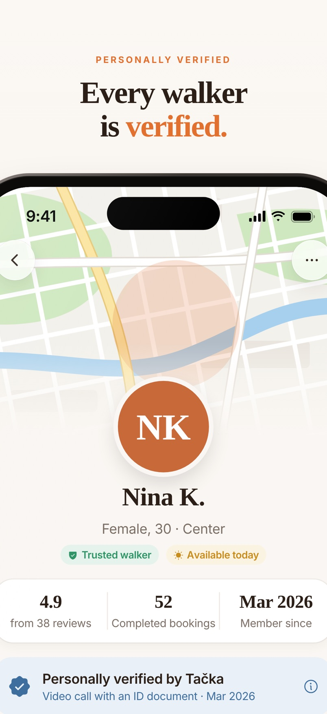
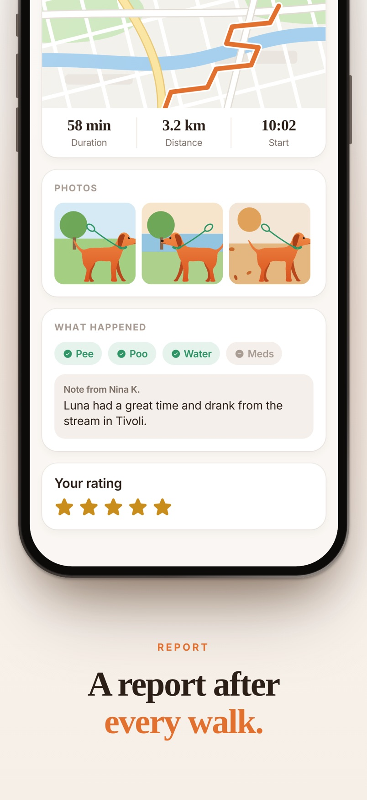

Tačka
Poišči preverjenega sprehajalca ali varuha psov kjerkoli v Sloveniji in spremljaj vsak sprehod v živo na zemljevidu.
Tvoj kuža v dobrih rokah
Tačka povezuje lastnike psov s preverjenimi sprehajalci in varuhi psov po vsej Sloveniji. Lastniki najdejo nekoga v bližini, rezervirajo v treh korakih in vsak sprehod spremljajo v živo na zemljevidu. Sprehajalci dobijo profil, urnik in nove stranke v svoji soseski. Tačka je brezplačna, ne jemlje provizije in je na voljo v slovenščini in angleščini.
Posnetki zaslona






Za lastnike psov
- Vsak sprehajalec potrdi svojo identiteto, preden ga lastniki vidijo
- Poišči sprehajalce in varuhe v bližini na seznamu ali zemljevidu, ki kaže približna območja, nikoli domačih naslovov
- Razvrsti po razdalji ali oceni, filtriraj po ceni in po tem, kdo je danes prost
- Profili s fotografijo, opisom, cenami, ocenami, opravljenimi rezervacijami in značko preverjenosti
- Sprehodi po 30 ali 60 minut, obiski na domu in varstvo na domu za več dni
- Rezervacija v treh korakih: kdo in kaj, kdaj, potrdi
- Enkratne ali ponavljajoče se rezervacije, na primer pon, sre in pet opoldne
- Profili ljubljenčkov z velikostjo, značajem, nagobčnikom in opombami za veterinarja
- Spremljaj sprehod v živo: štoparica, položaj sprehajalca in pot
- Poročilo po vsakem sprehodu: pot, trajanje, fotografije, dogajanje in opomba
- Oceni in napiši mnenje po vsakem opravljenem sprehodu
- Prijavi profil ali oceno in blokiraj kogarkoli, prijave pregledamo ročno
- Prijava z Apple ali z e-naslovom ter preklop med načinom lastnika in sprehajalca
Za sprehajalce in varuhe
- Hitro preverjanje identitete z osebnim dokumentom in selfijem, prek našega partnerja Didit
- Javni profil s tvojimi storitvami, cenami in območjem
- Tedenska razpoložljivost in urnik prihajajočih sprehodov za 14 dni
- Sprejmi ali zavrni prošnje
- Preverjanje povodca in nagobčnika pred vsakim sprehodom
- Začni in Končaj z enim dotikom, GPS pa deluje samo med sprehodom
- Med sprehodom dodaj fotografije, kljukice in opombo
- Kontrolni seznam za varstvo: voda, hrana in zdravila
- Obiski in varstvo na domu se odklenejo po petih opravljenih rezervacijah z oceno 4,5 ali več
- Brez provizije: lastniki ti plačajo neposredno
Kako deluje
Lastnik izbere sprehajalca in pošlje prošnjo za termin in psa. Ko sprehajalec sprejme, oba vidita telefonsko številko drug drugega in se o plačilu dogovorita sama, z gotovino ali nakazilom. Tačka je brezplačna, brez plačil v aplikaciji in brez provizije. Ko sprehajalec tapne Začni, lastnik vidi štoparico in sprehajalčevo pot v živo na zemljevidu. Deljenje lokacije se samo ustavi, ko sprehajalec tapne Končaj, lastnik pa dobi poročilo o sprehodu.
Zahteve
- iPhone z iOS 17 ali novejšim
- Star moraš biti vsaj 18 let
- Na voljo po vsej Sloveniji
- Sprehajalci potrebujejo dostop do lokacije med sprehodom in osebni dokument za preverjanje identitete